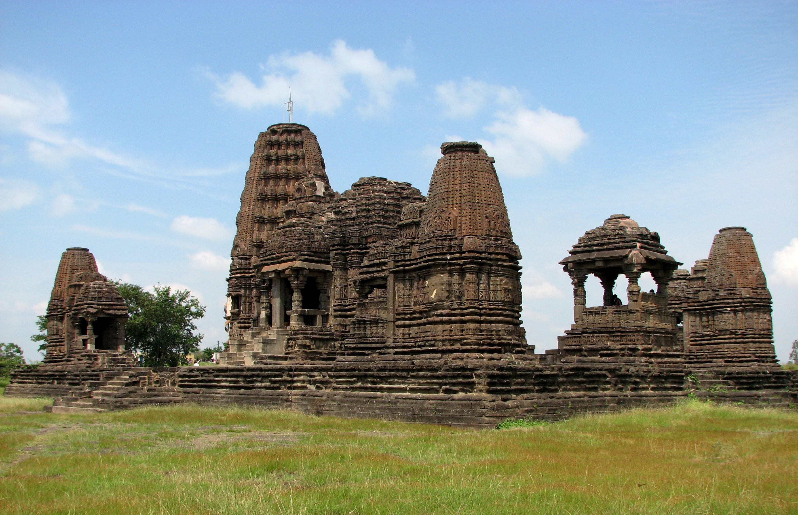
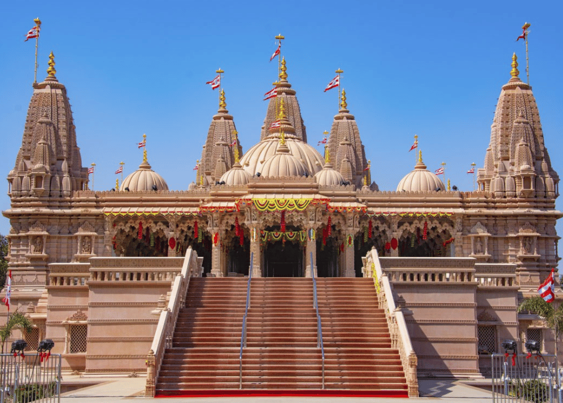
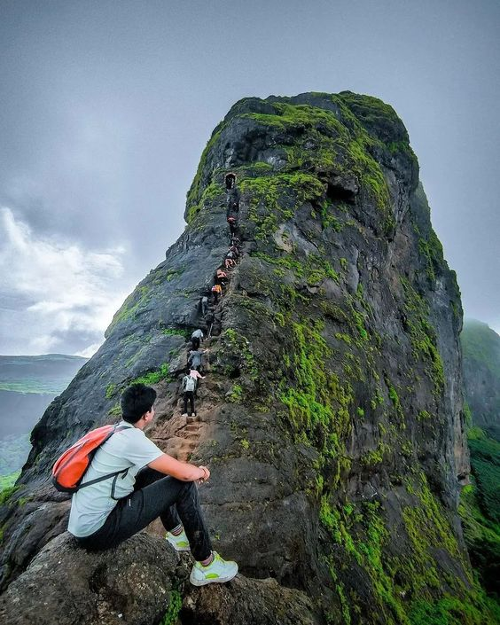
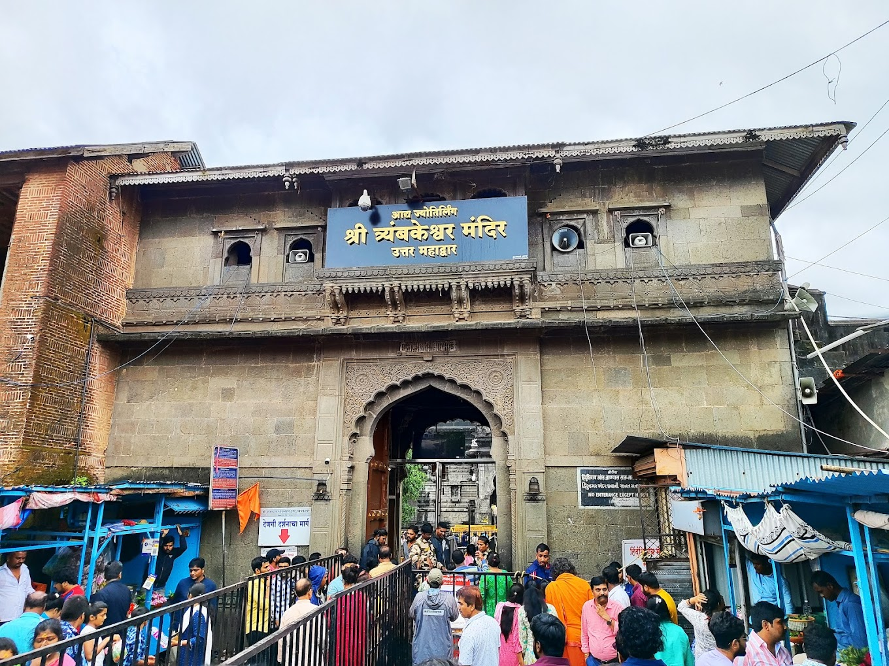
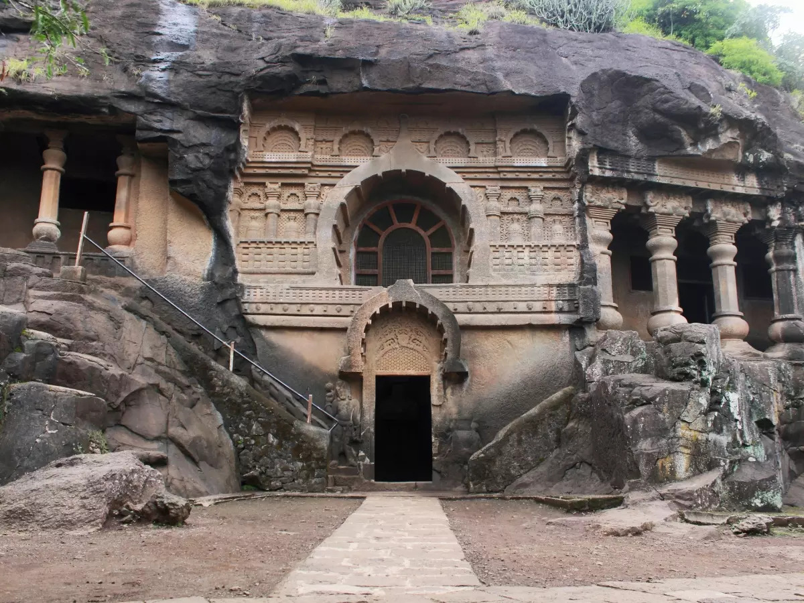

|

Ganeshwar Temple Gondeshwar Temple, built in the 11th century by the dynasty, is a stunning example of ancient architecture dedicated to Lord Shiva. |

Gangapur Dam Gangapur Dam, located near Nashik, is an earthfill dam on the Godavari River, providing water for irrigation and hydroelectric power generation. |

Swaminarayan Temple The Swaminarayan Temple in Nashik, built in 2017 in Dindori, serves as a spiritual and community hub with traditional architecture. |
|

Harihar Fort Harihar Fort, located near Nashik, is a hill fort known for its unique rock-cut steps and panoramic views, popular among trekkers for its challenging climb. |

Trimbakeshwar Temple Trimbakeshwar Temple, located in Nashik, is a sacred Hindu temple dedicated to Lord Shiva and one of the 12 Jyotirlingas in India. |

Pandav caves The Pandav Caves in Nashik are ancient rock-cut Buddhist caves from the 2nd century BC, later linked to the Pandavas. |